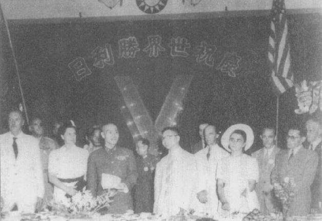

|
前一页 后一页 回目录 回主页 |
第七章：雅尔达、东北和战后战略 史迪威离职后四天，魏德迈接下这位前任者的所有职位。堪萨斯长大的高个子将领魏德迈和史迪威一样，在第二次世界大战之前从未有实战经验，但是在担任蒙巴顿勋爵的参谋长之前，他曾在马歇尔麾下担任策划诺曼第登陆的重要角色①。魏德迈是个有自信、为人圆融、观察入微的军官，第一次和蒋委员长会面，就觉得他是“个头小、优雅、骨架细，有黑色深邃的眼珠、亲和的笑容”。委员长身穿潘兴式戎服，不时摇着一把小扇，有点紧张和羞涩，可是“十分机警”。魏德迈虽然尊敬委员长及其地位，仍和史迪威一样看到蒋手下各式部队的严重问题。魏德迈的第一印象是，“这些中国人（军官）冷漠、缺乏才智”，只顾“政治权谋和虚矫”，他们不敢报告实情，“更掩饰自己的愚蠢和低能”。第一次见蒋之后几天，他得出结论：委员长怨的将领“无能、讨厌”②。 ① Charles F.Romanus and Riley Sunderland, Time Runs Out in the CBI (Washington: D.C.: Office of the Chef of Military History, Department of the Army, 1959), p.16. ② 同上注，p.52。 魏德迈也发现中国的指挥结构乱得惊人——华东战场没有一位统领全局的将领。重庆的参谋发出的命令可能和地面战事毫不相关，调兵遣将零零碎碎，相邻战场的高级军官之间毫无协调，师级军官 “最多只算得上平庸”。也没有系统做法以新兵增补部队伤亡员额，更缺基本的器械、武器、补给和粮食①。魏德迈特别注意到，和美国结盟已经三年之久，重庆还没有重型高射炮②。 ① 同上注。 ② 虽然美方在自由中国的大部分地区已掌握空中优势，但不代表日本空军就毫无作为。 可是和史迪威大不同的是，魏德迈认为国民政府“绝对不是不愿作战”，反而在抗日上展现“令人惊服的韧性和耐力”。他指出，工业先进、全国团结的法国只打了6个星期就投降，中国人打了7年多的仗，伤亡近300万，仍然奋战抗日①。另外，跟史迪威最大的不同之处还有，魏德迈对于中国共产党的意图毫无幻想。 ① Albert C.Wedemeyer, Wedemeyer Reports (New York: Holt, 1958), pp.277-278. 蒋遵守他对罗斯福的承诺，指派美军少将谢维斯（Gilbert X.Checes）为中国庞大、混乱的后勤部队指挥官（编按：中国战区物资服务指挥官）。不久，后勤制度“开始运作相当顺利”①。可是，当前最急迫问题是日军持续不断的攻势。日军在攻占广西的桂林、柳州之后，颇有进取昆明、甚至重庆的迹象。蒋向魏德迈保证，国军一定坚守桂林，但是11月间，桂林、柳州相继沦陷。魏德迈新拟“阿尔法防卫计划”，集中兵力保卫昆明，从缅甸急调大部分X部队、Y部队回防。12月，西方新闻界自重庆发出的电讯报导说，接下来几天就会决定中国是否会“被轰出战局”。魏德迈担心日军会出动空降部队和滑翔机进攻重庆，建议迁都昆明。蒋回答说，他要坚守不退；魏德迈立刻说那么他也誓死相陪。如此坚定相挺，令蒋大为动容。蒋不认为日军会冒险深入内地，但果真来犯，他要“坚守” 重庆“决与此城共存亡”②。 ① Herbert Feis, The China Tangle: The American Effort in China from Pearl Harbor to the Marshall Mission (Princeton, N.J.: Princeton University Press, 1953), pp.195, 204. ② Chiang Diaries, Hoover, December 2 and 6, 1944, box 43, folder 24. 日军根本没来进攻。同时，在菲律宾雷伊泰湾（Leyte Gulf）美国海军舰队摧毁日本海军尚存的多数船舰，铲除日本来往东南亚运输的能力。日本陆军确实还有一些运输火车可以从西贡、经长沙到大连，但现在也没用了。陈纳德的空军主宰了长江以南的空中优势，他们对桥梁、铁道之轰炸很快就使此一走廊丧失功用①。 ① Wang Chaoguang, "Wartime Rivalry and the Deliberation of Postwar Issues," paper presented at Harvard University Conference on Wartime China, Maui, January 2004; F.F.Liu（刘馥）, A Military History of Modern China, 1924-1949 (Princeton, N.J.: Princeton University Press, 1956), p.219. 何应钦（右一）等中美将领在机场迎接魏徳迈（右二） ① RGASPI, collection 17, inventory 128, file 822, sheets 7-21. 赫尔利取代暴躁的高思出任美国驻华大使。高思离任前告诉魏德迈说：“我们应该拔掉栓子，让整个中国政府被冲走。”①赫尔利虽然支持蒋介石，也展开罗斯福赋予他的第二项任务——促成国共合作。一向活力充沛、乐观进取的赫尔利认为关键在于赢得共产党领导人的善意和信赖，有如他和委员长来往的情况。他依然相信中共领导人实际上不是共产主义者，而是斯大林和莫洛托夫所说的外红内白的萝卜；如果得到公平对待，会高高兴兴地投效蒋介石，组成民主的联合政府。 ① Wedemeyer, Reports, p.205. 赫尔利要求到延安拜访毛泽东，蒋勉强批准。赫的飞机于11月7日抵达此一共产党基地，当他步下飞机台阶时，喊出巧克陶印第安人的战呼，让接机的毛泽东一头雾水。赫带来五点和平协议，经过一番折冲，他和毛就修订版达成协议。新的草案让国共两党在重组后的联合政府里，在法律与政治上平等立足。所有的中国部队都要执行军事委员会的命令，但共军维持完整，从外国得来的补给应平分。为换取中共前所未有的收获，毛泽东口头保证共产党将拥护蒋做为国民政府主席和军事委员会委员长的领导地位。赫尔利离开延安后，毛泽东是又高兴、又嘲弄①。这位美国特使实质上是把他渴望的东西全给了他——与国民党的平等地位等于准许它瓜分中国领土，但又不限制中共扩张或垄断在其区域内之政治权力。 ① Peter Cladimirov, The Vladimirov Diaries (New York: Doubleday, 1975), p.289. 赫尔利也很高兴。他认为毛泽东个人担保共产党将接受蒋介石领导，是个大突破。但是，重庆的蒋委员长却叹，毛又“诱惑”了一个老美。宋子文告诉赫尔利：“共产党是用巧言在骗你。”①厚道的赫尔利都会同意毛泽东草拟的五点和议，让蒋体会到美国恐怕不会停止施压，非要逼他和共产党合组联合政府不可。他的结论是，美国还是在要求他让步，果真让步的话就会牺牲他的政府以及“个人尊严”。所以他在和周恩来、赫尔利谈判时，将再一次亮出“底线”，那就是只有共军完全编入中央军，国民党才会接受中共的合法化。这就是未来两年谈判陷入僵局的症结所在——中共坚持先组成联 合政府再解散军队，但是国民党绝不同意与任何一个武装政党组成联合政府。有一次会谈，周恩来拒绝把委员长“不会被接受的”条件带回延安，但是他说，谈判应照旧继续，他会去请示毛的意见。蒋发现，他唯一勉强可信任的这位共产党员“已不如从前之恭顺矣”②。 ① Chiang Diaries, Hoover, November 11, 1944, box 43, folder 23; 秦孝役，《大事长编》卷五，p.2474。 ② Chiang Diaries, Hoover, November 22, 1944, box 43, folder 23. 为了怂恿美国对中共产生好感，毛、周联名致函给魏德迈，请他转呈白宫：他们渴望和罗斯福总统会晤①。毛也告诉狄克西代表团团长包瑞德上校，中共军队愿意“在无任何附带条件的情况下，全心接受一位美国将领的领导”②。蒋也一样，在新年文告试图讨好美国人。他保证将尽早通过宪法，归政于全国的国民、并且对政府的自由化与清廉立刻采取行动。元月和周恩来等人开会时，蒋的代表王世杰提议成立战时内阁，纳入中共党员；召开三方会议（美、国、共）研商共军纳入中央军的细节；指派一名美国军官在抗战期间奉军事委员会名义指挥共军部队。蒋认为既然他们已接受共军纳入政府军的目标，他可以提议由美国人来负责此一决定性角色。周恩来针对这些提议的答复是：中共只有在新的全国联合政府成立后才会交出部队③。 ① Barbara Tuchman（杜希曼），Notes from China (New York: Collier Books, 1971), pp.77-79. ② 后来，毛泽东在一份党内文件写说，中共当然“绝不会干这种事”。1945年1月他也告诉赫尔利了。见Michael M.Sheng（盛慕真），Battling Western Imperialism: Mao. Stalin, and the United States (Princeton, N.J.: Princeton University Press, 1997), p.90. ③ 秦孝仪，《大事长编》卷五，1945年1月14日，p.2506；White Paper, p.79. 虽然罗斯福总统曾向孔祥熙提起邀蒋介石参加盟国峰会，当三强谈到峰会时，美国并未提出蒋出席与否的问题。罗斯福不愿意有任何让斯大林不痛快的动作，因为他在这次峰会的主要目标是敲定苏联在德黑兰会议承诺参加太平洋战争。此时，美国军方和白宫还不确定原子弹是否会研发成功、何时可研发成功，他们认为日本人会从事绝望的本土保卫战，届时美军子弟又要牺牲数十万人性命。去年秋天，斯大林和美国驻苏联大使哈里曼（Averell W.Harriman）谈话时，曾确认苏联预备和日本一战，但是他的政府对日本、外蒙古和满洲有若干权利主张，必须得到满足。罗斯福和霍浦金斯似乎也没怎么讨论就接受了，也不跟蒋介石照会一声，就和莫斯科交涉关系到中国的权益主张；而蒋介石若是知道，毫无疑问一定会跟他们争辩，说苏联事实上急着要介入太平洋战争，根本不需要做重大让步①。美国总统和他的首席政治顾问无疑也相信自己是一片好意、而且军事现实也有需求。斯大林就没那么害怕毛泽东是否有异议，他在峰会召开前一天，才通知毛说有这么一回事及其目标②。 ① Robert E.Sherwood, Roosevelt and Hopkins (New York: Harper and Brothers, 1950), p.512; Romanus and Sunderland, Time Runs Out, pp.331-332. ② Sheng（盛慕真），Battling Western Imperialism, p.93. 三巨头决定在苏联克里米亚半岛的雅尔达集会，此地离因德军进出而一片残破的塞瓦斯托波尔地区仅有80英里。目睹本地区惨象，会让西方人多少了解俄国人在抗德之战付出的代价何其惨重。雅尔达会议就这样未经公布地于1945年2月4日正式召开。蒋还不知情，交给华府一项重庆政府和莫斯科双边会谈的议题方案，促请美国提供建议。十分讽刺的是，国务院远东局也不知道峰会的状况，回答说：美国当然不能在中、俄事务上担任调停人或顾问①。 ① Feis, China Tangle, p.236. 除了要苏联加入战局外，美国总统另一个目标是确保中国收复一切被日本夺走的领土（包括将由苏联短暂占领的满洲）。罗斯福要求苏联尊重中国的主权、战后撤离中国领土、不干预中国内政，做为斯大林所争取的让步的交换条件。斯大林一口就答应。罗斯福也推动一个相关的构想：美、苏携手提倡国共联合政府，以防止内战爆发①。 ① 同上注，pp.226-239。 2月11日签署的雅尔达协定有一秘密附件，苏联同意在击败德国后90天内加入战局，向日本开战。苏联将可得到西伯利亚海岸外的千岛群岛，并取回库页岛的南半；中、苏共管经营中东、南满铁路；租借旅顺军港；大连商港国际化；并同意“苏联（在东北）的特别利益，应予保障”。协定亦保证外蒙古维持现状——换句话说，在苏联控制下维持名义上的独立。至于中国，协定规定中国“应保持在东北之完整主权”。此外斯大林同意，有关外蒙古、旅顺、大连和中东、南满铁路的条款“需要蒋介石委员长的同意”。这将透过中苏签署友好同盟条约的方式达成①。 ① 同上注，p.249。 斯大林也获得三强发表声明，表示苏联政府（关于中国）的要求“应确实在击败日本后被履行”。换句话说，蒋介石是被逼着赞同他不知情的决定。罗斯福也同意，在苏联25个师兵力于“3、4个月内”完成调动到东方之前，先不告诉蒋此一秘密协议①。 ① Harry Harding（何汉理）and Yuan Ming, eds., Sino-American Relations, 1945-1955 (Wilmington, Del.: SR Books, 1989), p.67; Robert E.Sherwood, Roosevelt and Hopkins (1948; New York: Bantam Books, 1950), vol.2, p.511. 会议一结束，斯大林就告诉毛泽东：苏联红军要来了！毛立刻发电报到重庆给周恩来，要他停止赫尔利所调停的国共会谈，立即返回延安①。毛并号召全体党员准备向美、蒋发动浴血奋战。 ① Sheng（盛慕真）, Battling Western Imperialism, p.93. 盛慕真引用毛泽东1949年2月3日给周恩来的电报，毛提到斯大林将和罗斯福、丘吉尔会面。盛从这里合理地认为，斯大林已传话给毛，告诉他即将要进行三巨头会议。 罗斯福在雅尔达同意这些影响到中国的秘密条件时，觉得他有把握“和蒋介石把事情讲明白”。此外，他已十分疲惫，急着避免更多争吵。关键的假设是，苏联预备（甚至渴望）在战后以“正常国家”的地位与世界合作，不再是决心创造意识形态卫星帝国的革命国家①。 ① 同上注，p.94；Sherwood, Roosevelt and Hopkins, pp.512, 516; Feis, China Tangle, p.240. 二月间，雅尔达会议消息公布——当然秘密协定不会公布——之后，蒋相当疑惧恐怕“尚有难言之内容”。但是就跟过去和三强打交道时一样，他也束手无策——除非他使出撑不住、要垮了的绝招①。不过国内方面，情势还不错，没多久魏德迈就呈报给蒋7、8月间对日军发动攻势的计划。这位美国将领不仅对抗日作战乐观，对处理中共也相当乐观。隔了 一个月，他向华府联合参谋本部报告说，他觉得“只要给蒋的政府相当小的援助”，就可扑灭中共作乱②。赫尔利也认为中共的军事力量被过分夸大。赫、魏的见解也助长了蒋对战后局势的审慎乐观。 ① Chiang Diaries, Hoover, February 21, 1945, box 44, folder 3. ② Romanus and Sunderland, Time Runs Out, p.338. 可是才不久，委员长和赫尔利就都听到中国在黑海会议遭出卖的消息，赫决定飞回华府査明真相。启程前，蒋拜托他向罗斯福保证，不论中共怎么做，中央政府仍决定遵守承诺召开国民大会，建立宪政。关于苏联，他认为只要美国采取强硬立场反对苏联干预中国，则俄国人“在供应中共武器之前必将三思”。 谣言继续传个不停，指称雅尔达会议有某种秘密协议；经过大力施压之后，蒋派驻华府的大使魏道明终于见到罗斯福，罗承认确有秘密协议，但只让魏看部分纪录。蒋一读到大使的报告，第一反应是“痛愤”，“雅尔达果已卖华乎……则此次抗倭战争之理想，恐成梦幻矣。”①让蒋痛苦的不是在东北退让这些事情，因为在未来一年，他还愿意在这个地区给斯大林更多退让呢！让蒋难堪的是，这些盎格鲁撒克逊人竟自认有权把中国的主权让渡掉！对他、对中国，这不啻是极大的侮辱。 ① Chiang Diaries, Hoover, March 15, 1945, box 44, folder 4. 然而蒋也很快就理解到，除了接受既成事实别无选择。因此，收到这个晴天霹雳之后，他第一个决定是请华府接见其外交部长宋子文，以征求罗斯福总统对双方处理苏联与中共事宜的“共同策略”之意见。白宫拒绝所请（又一次侮辱）。但是几天后，蒋接到斯大林的传话，建议订个日期让宋子文到莫斯科和莫洛托夫会面①。 ① Feis, China Tangle, p.278. 赫尔利回到华府后马上赶到白宫，罗斯福的身体状况吓坏了他。罗的“皮肤彷彿贴在颊骨上”。罗否认中国在雅尔达遭到出卖，但是经过好几次谈话后，罗同意让赫仔细瞧瞧完整的雅尔达秘密档案。赫尔利读完之后，惊愕得不得了。他觉得在中国权益上的这些让步，严重抵触大西洋宪章中领土调整必须符合相关人民意愿的原则。罗斯福的罪恶感被唤醒，他说他了解赫尔利的考量。事实上罗斯福和华府其他高阶官员也在重新思考雅尔达协定和美苏整体关系，莫斯科在波兰强悍树立共产党政府之举，尤其令人不安。哈里曼在他那位机灵副手肯楠（George Kennan）的影响下，才慢半拍地警告说斯大林的目标是“建立极权主义”①。 ① Don Lohbeck, Patirck J.Hurley (Chicago: Henry Regnery Company, 1956), pp.372-377. 同时，赫尔利读到国务院2月27日的一份文件，建议如果美军在中国沿海登陆，美军应把中共武装起来；又说中国未必要在委员长领导下统一起来。赫尔利很气，这份文件起草过程竟没征询他的意见。他指控这些建议违背总统的政策。他又跑去见卧病的总统，罗也同意美国对华政策的核心就是支持蒋的政府。罗斯福对赫尔利的信赖，远远大过他对国务院或战争部的信赖。但是，罗又告诉赫：“现在，请你尽量宽容（中共），多说好话……别把武装部队可能和平统一的基础毁掉了。”①4月2日，赫尔利在华府举行记者会。根据和罗斯福谈话的内容，他宣布美国对中国唯一承认、支持的是中央政府。几天后，当赫尔利前往欧洲和盟国领袖咨商对华政策之际，毛泽东下令发动宣传抨击“美帝国主义”②。赫尔利拜访唐宁街10号时，和邱吉尔意见相左；邱认为美国的对华政策是“大美国幻觉”，但他答应支持③。 ① Feis, China Tangle, p.277. ② Liberation Daily（《解放日报》），April 9, 1945. ③ Lohbeck, Hurley, p.370. 4月13日下午6点钟，蒋正在官邸庭院散步，一名副官快步趋前转呈外交部急电：罗斯福总统因脑溢血病逝。开罗会议、对史迪威的要求、雅尔达等等之后，蒋对罗斯福虔诚的敬意已消褪，但他依然尊敬这位美国领袖，他和蒋同样怀抱中国可以做为大国、与美国缔盟的大梦。因此，蒋担心罗一撒手人寰，美国政策“恐将受英之操纵”。他不晓得杜鲁门是否是个“真诚”的人①。 ① Chiang Diaries, Hoover, April 13, 1945, box 44, folder 5. 尽管赫尔利和派驻在重庆的美国外交官对蒋的观感大不相同，他却和他们一样坚信中共不是真正的共产主义者，因此斯大林不会特别属意让中共夺得中国政权。赫尔利在莫斯科经过一系列会议之后，很高兴地向新任美国总统报告，斯大林和莫洛托夫已同意完全支持美国的对华政策，包括中国的武装部队全都统一纳入蒋介石领导之下。 当年春天，蒋召开宪政实施协进会初次会议。他在一项重要的公开演讲中宣称，“深觉历史未来之裁判者，决不愿陷国家于内战。”①他向委员会保证，国民党会把“最高权力”还给人民，但只能透过国民大会行使之。同时，他说，国民党将愿意接纳其他政党加入政府。回到1月间，周恩来曾经原则同意召开筹备委员会，但现在他火速送信到重庆并传话给赫尔利，抱怨蒋片面宣布未来的政治蓝图。周指责蒋的宣布“意在误导，企图分裂中国，搞一党专政”②。 ① White Paper, p.83. ② 同上注，pp.84-85；Feis, China Tangle, p.276. 国民党也召开了它的第六次全国代表大会（这是1938年以来的第一次）。想到战胜日本指日可待，与会党代表皆十分兴奋，蒋的政敌即使未必高兴，也愿意接受他的领导。他提出的决议案在大会迅速通过：颁令停止训政；支持通过新法律，允许所有政党皆获合法地位；主张多党制、直接选举地方及设立省议会，所有成年公民不分教育、财力都有投票权。党代表们决定在11月召开制宪国民代表大会，把这些条款统统纳入这部民主宪法。国民党六大呈现改革色彩，也十分民主。例如，它宣布党已决定降低农地地租、解决土地租赁和地价税问题的措施，并且要实施性教育和每天工时8小时的制度。然而，蒋同时也确认大会所选出的行政与监督委员会，不会让民主化过程脱离他的控制①。某些国民党大老如桂系白崇喜，主张剿灭共党之后才实施宪政②。他们警告说，只要中共控制大片国土和人民，就不可能举行自由、直接的选举③。蒋承认个中风险不小，但觉得和美、苏亟需建立良好关系，也只能努力去做。他自己心里说不定认为他有足够的余裕、人望和力量在政治自由化阶段掌控住大局。改善一般中国人民的生活也符合他的政治价值和利益。他与中国的资本家并无深厚关系或牵羁，同样的，对地主仕绅也没有强烈的认同。因此，他很可能认真地支持六大对土地改革的口头承诺。甚且六大期间，各方抨击党政军贪渎无能，他也统统包容，因为他也认同这些抱怨。 ① White Paper, pp.268-270. ② 郭廷以编，《白崇禧先生访问记录》，上下二册（台北：中央研究院近代史研究所口述历史丛书，1984），p.475。 ③ 同上注，pp.475-478。 六大会上，蒋介石长子经国领导的青年团成员，对党政内部贪腐之抨击尤其猛烈①。毫无疑问， 蒋氏父子批准这些攻击，认为开放接受批评，会让蒋宣称民主即将到来及其可能的效应带来可信度。可是，外国记者和独立的中国记者却把这种坦诚做法解读为贪渎横行的证据。 ① Jonathan D.Spence（史景迁），The Search for Modern China (New York: W.W.Norton, 1990), p.482. 委员长此时亦决定解散国军部队的政工部门。有一部分是针对美方的批评做此回应，也因为政工摆明了与蒋的要求有冲突——他要求在新的国共协议中，中国只会有一支不涉政治的军队，即国军或中央军。而要把军队去政治化，毛泽东当然不肯，即便只是象征性动作。次月，当他在延安召开中国共产党第七次全国党代表大会时，毛可和蒋不一样，完全没听到对中共的党政军或政策的批评①。中共新的党纲反而使权力越来越集中②。 ① Joseph J.Heinlein, "Political Warfare: The Chinese Nationalist Model," Ph.D.diss., American University, 1974, p.482; White Paper, p.101. ② Conrad Brandt, Benjamin Swartz（史华慈），and John K.Fairbank（费正清），A Documentary History of Chinese Communism (Cambridge: Harvard University Press, 1959), p.419; Feis, China Tangle, pp.290-291. 一 “一号作战”后，魏德迈拟定计划要夺回湖南、广西的粮仓，并进而攻占广州、香港等若干沿海港口，遂下令在武汉西北新建基地供14航空队起降。到了1945年春天，长城以南日军高达105万人，日本驻华派遣军司令官冈村宁次将军企图进攻湖北省先发制人①。在魏德迈率领下，蒋部署67个师共60万大军，并以200架14航空队战斗轰炸机做后援。3个月后，国军击退日军进击，证明“有好的指挥官、现代武器和车辆，以及稳定供应粮食和弹药”，以及人数上的优势，国军也可成功击败日本多个师团的大规模部队。蒋一度未通知魏德迈就下达命令给负责指挥国军部队的何应钦。当魏德迈强烈但不失敬意地反对时，蒋就跟过去面对史迪威非难时一样，解释说他只是给何应钦出出主意。但此后，蒋再也没有干预前敌指挥。根据魏德迈的说法，蒋若遇上“蜂蜜而非酸醋”，“就会很乐意接受他只是计划里的旁观者”②。 ① Romanus and Sunderland, Time Runs Out, pp.350-352; Hsi-sheng Ch'i, "The Military Dimension, 1942-1945," in James C.Hsiung（熊玠）and Steven I.Levine, China's Bitter Victory (Armonk, N.Y.: M.E.Sharpe, 1992), pp.165-166. ② Wang Chaoguang（汪朝光），"Wartime Rivalry," p.7; Haruo Tohmatsu（等松春夫），"The Strategic Correlation between the Sino-Japanese and Pacific Wars," paper presented at Harvard University Conference on Wartime China, Maui, January 2004, p.17; Romanus and Sunderland, Time Runs Out, pp.278, 287, 289; Fies, China Tangle, p.297; Wedemeyer, Reports, pp.301, 338. 正当战事激烈进行之际，赫尔利回到重庆，就他在伦敦和莫斯科会谈的结果做报告。然而，蒋对斯大林宣示的善意没太当真：而英国人方面，他认为他们在战后仍会继续殖民政策。蒋依然担忧雅尔达的问题，希望就罗斯福“交还”给苏联在东北的“权利”，和斯大林谈判。当然还有一个更大的问题要谈，那就是恢复国民政府在整个区域的主权。因此当他听说，杜鲁门告诉邱吉尔和斯大林，凡是罗斯福做出的协议，他都会“完全支持”，蒋气坏了。杜鲁门这么大包大揽地宣布全都支持，严重破坏了他和莫斯科谈判时的筹码①。 ① Lohbeck, Hurley, pp.370, 376-377; Chiang Diaries, Hoover, June 15, 1945, box 44, folder 7; Ray Huang（黄仁宇）, Chiang Kai-shek and His Diary as a Historical Resource (Armonk, N.Y.: M.E.Sharpe, 1996), part 2, p.140. 大约此时，斯大林命令远东地区的红军88旅，准备进入东北。88旅是由1930年代初期被日军赶到西伯利亚的中共抗日游击队改编组成。这支持续受训14年之久的部队（包括能说中国话的苏联军官），已经等不及要回到故土①。4月6日，斯大林正式宣告废止苏日中立条约。 ① Sheng（盛慕真），Battling Western Inperialism, pp.105-106. 两星期后，蒋读到新闻：希特勒举枪自戕，第三帝国无条件投降。两位美国记者形容中国对此新闻的反应是大大松了 一 口气。次日，蒋告诉他的高阶将领，苏联很快就会加入太平洋战争，并攻占东北；他开始催促赫尔利，要美国支持中国在东北的领土主权。这位美国大使向他担保，美国一定会坚持“中国主权和领土完整性必须得到保障的原则”。蒋最想要的就是美国的“保证”，但现在他关切的重点是，如何让华府和莫斯科分别遵守各自的承诺①。 ① Theodore H.White（白修徳）and Annalea Jacoby, Thunder Out of China (New York: William Sloane Associates, 1946) p.266; 关于“保证”请见Chiang Diaries, Hoover, May 24, 1945, box 44, folder 6. 就在赫尔利告知苏联计划在8月分某日进攻东北的日军后，蒋紧急命令手下文武部门官员为战争结束做准备，很可能在新年之前就会战胜日寇。过去8年艰苦流亡的官僚，突然间要承担起接收一切民政事务的计划工作（包含人口1亿5千万的日本占领区之法律与秩序维护），数百万的难民还乡，200万日本百姓的处理与遣还，更换傀儡政府官员，以及占领区银行及经济活动的维持和改造①。同时，军官们仅以少许卡车和业已残破的铁路线，也得承担起似乎是不可能的任务——迅速地抢在共军之前，把数十万国军部队运送到广大的日本占领区，接受百万名日军之投降。蒋政府很快就提出许多计划——但与往常一样，困难之处是在执行②。 ① Time（《时代》）, December 24, 1945. ② 同上注；秦孝仪，《大事长编》卷五，pp.2565-2566。 宋子文担任行政院长时（右一）与蒋介石、宋美龄、蒋经国（后右一）合影 ① 关于“日本占领区”请见Sheng（盛慕真），Battling Western Imperialism, pp.97, 103. 关于“越过长江”请见秦孝仪，《大事长编》卷五，p.2571。关于“三篇文章”请见Wang Chaoguang, "Wartime Rivalry," p.27. 此时仍是行政院院长兼外交部长的宋子文，很不高兴蒋把自己能通俄语的儿子经国派为代表团团员，前往莫斯科交涉事关重大的中苏条约之谈判。可是，此时的蒋已把经国当做主要的苏联专家，他们已敲定谈判策略。国民党内的保守派已在要求就苏联的附庸外蒙古这个议题，绝不能退让。蒋已预备接受外蒙古透过公民投票取得独立，虽然他了解斯大林所提议的“却非蒙古之真独立耳”。可是蒋也明白，如果其战后策略要有成功的机会，这是必须支付的代价①。 ① Chiang Diaries, Hoover, July 5, 1945, box 44, folder 8. 中苏谈判6月27日在克里姆林宫展开。会谈当中有个空档，斯大林邀请蒋经国到他办公室密谈。后来，蒋经国乐观地向父亲报告：斯大林向他保证苏联将支持国民政府统一中国的努力。斯大林也向宋子文说，中国所有的军队都必须接受政府的节制，苏联军队将在日本投降之后3个星期内就开始撤出东北①。莫斯科会谈后来暂停，因为盟国最后的高峰会在苏联占领的东德波茨坦开会——又没邀中国领导人出席②。 ① 蒋经国，《蒋经国先生传记》（台北：行政院新闻局，1989），第二册，pp.272-273；Jay Taylor（陶涵）, The Generalissimo's Son (Cambridge: Harvard University Press, 2000), p.126. ② Feis, China Tangle, pp.317-321. 虽然原子弹已在波茨坦会议召开的前一天试爆成功，美国却很奇怪地还是急着要苏联介入东北战事以结束太平洋战争。事实上，在会议进行期间，马歇尔发出警告给麦克阿瑟、尼米兹和魏德迈，要他们准备好日本会突然投降，同时杜鲁门总统和新任国务卿贝尔纳斯（James Byrnes）起草一份盟国文告，要求东京当局无条件投降，否则就会遭遇“迅速、完全的摧毁”。杜鲁门把“波茨坦宣言”草本传给蒋介石，要他签字。盟国再一次没让中国领导人有机会参与起草一份事关重大的盟国文件，但是蒋没有抱怨，立刻同意签署。 地势险峻的滇缅公路 ① Romanus and Sunderland, Time Runs Out, pp.317-321, 365-366. 这条输油管运送了11600吨的燃料。丘吉尔、陈纳德等人1943年预测，战争结束了，公路都还不会盖好。结果是提前5个月完工。 ② Romanus and Sunderland, Time Runs Out, pp.15, 341. 1944年11月30日，美国有27739名军事人员派在中国，接下来8个月人数更大幅增加。 ③ 抢回密支那机场，的确使美国空运司令部得到更短、更安全的一条通路。 盟国其他领袖还在波茨坦开会，蒋已在重庆思考战后世局。他和毛一样，预见美苏会发生冷战，写下：俄国已占领半个欧洲，因此视美国为其“假想敌”，但仍需20年时间才能重建其经济与军事实力。中国当然也已经筋疲力尽，但由于在远东人口众多、土地广袤，蒋认为足可在政治上和苏联、英国和美国平起平坐。不过他认为，国民政府若是试图剿灭中共，俄国就会支持毛泽东，军事前景黯淡。抗俄“不能如七七对日抗战时之容易把握也”。事实上，蒋等于（第一次）承认中央政府和有莫斯科在背后撑腰的共军，若在东北和华北爆发内战，结局很可能就是共产党获胜①。 ① Chiang Diaries, Hoover, July 28, 1945（每周反省），box 44, folder 8, 33. 为了回应这些现实，蒋认为中国必须集中全力和苏联维持友好合作关系。但是同时，斯大林也必须相信国民政府有决心和军事实力在必要时出手对付中共——不论结果是多么渺茫。难就难在这里了。蒋写下“如我能自主自立，中立不倚，则彼当能尊重我中立地位”，但中国若是太弱——意即不愿或不能在东北力抗中共，那么无论国民政府如何配合苏联的利益它就是会支持中共。他写下，有一个可能的方案就是和美国在“中国内地”合作，并与苏联在北疆和东北以及外蒙古议题上合作。这就是——（一）北疆与俄合作。（二）内地与美合作。（三）对俄重政治（中共关系）。（四）对美重经济（工业技术）——的四点外交方针①。 ① 同上注。 蒋经国和斯大林谈话后的审慎乐观，赫尔利强力担保美国会“保证”中国收复东北，加上魏德迈对国军有能力对付中共具备信心，都影响到委员长做出此一新评估。虽然他质疑这些判断背后的假设，而且最近自己也再次表达怀疑斯大林的用心，他还是大跃进地下结论表示，由于全球动态关系，莫斯科现在会“支持国民党、而非共产党统一中国”①。 ① 同上注。 蒋明白国军若要接收重要的沦陷区，必须依赖美国大规模空运其部队和补给。美国还计划至少帮国军的39个师完成武装设备，甚至很有可能是罗斯福答应的90个师，这都将危及他说服斯大林与国民政府合作的策略。事实上美国援助已在确认阶段。蒋写下他对战后政策的思考之后3天，魏德迈奉马歇尔指示，和蒋讨论美国打算在日本投降之后，暂时占领中国若干地方。蒋对此消息欣然接受，也要求日本投降后，美国运送数十万名国军部队到东北和华北。他说，中国政府将尽速对所有地区的民政事务负责，美军则应尽可能避免和共军有任何合作。魏德迈因为看好国军战胜共军的军事前景，一口就答应①。 ① Chiang Diaries, Hoover, July 31, 1945, box 44, folder 8; Feis, China Tangle, pp.334-335; Romanus and Sunderland, Time Runs Out, p.391. 同时，蒋也否决史迪威以美国第十军军长身分率部登陆中国的任何可能性。美国战争部也只好从命。可是，就在日本投降日之前两个星期，马歇尔采行史迪威的建议，免去陈纳德14航空队司令的职务。整个抗战期间,陈纳德率领的飞虎队及后来的14航空队，是实际跟中国境内百万日本雄师作战的唯一一支美国军队。他们的成就固然没有陈纳德和蒋介石早先过分夸大的那么耀眼，但仍令人十分佩服。蒋替陈纳德办了一场欢送宴会，颁给他青天白日勋章——史迪威曾经拒领同样的殊勋①。这位被称为“老脸皮”的美国人要驱车离去的消息传开后，街道挤满好几千名（有些宣称是几百万）的欢呼民众，驾驶把引擎关掉让民众推着车在重庆路上整整走了四小时②。 ① Romanus and Sunderland, Time Runs Out, p.359. ② Jack Samson, The Flying Tiger: The True Story of General Clair Chennault and the U.S. 14th Air Force (Guilford, Conn.: Lyons Press, 1987), p.265. 到了8月，史迪威、魏德迈要组训、装备国军39个师的计划已经完成逾半目标。若是完成，这是近40万名的精锐之师，这些人不仅有好的食物，在贫穷乡下人占多数的中国，健康也在平均值以上。魏德迈建议再加40个师接受美国援助，使国军整体兵力包括41个地方保安师，达到120个师①。这79个精锐师不仅会改造国民政府的军事能力，并且大大加强国军对付共党的优势。魏德迈的报告和建议继续鼓舞蒋去相信他的战后策略可行——只要斯大林不大加干涉，国军可在东北和中国任何地方击败毛的部队。然而要让斯大林不越雷池一步，需要美国施加强大压力，但美国自己介入国军的现代化，却又不许苏联插手，会让蒋很难说服斯大林，他是在推动对苏友好并日益中立的外交政策。 ① Romanus and Sunderland, Time Runs Out, pp.368, 381. 8月6日，一架B-29轰炸机在广岛投下一颗原子弹，亮眼的光线才刚一闪，当场约78000名日本人丧命。次日一大早，苏联对日宣战，将近75万红军涌入东北。日本著名的关东军精锐部队已调离到中国内地打战，或回本国防卫；结果苏军才5天就深入东北的北部，往中朝边界推进。苏联红军88旅里的中共军官，大部分是东北人，开始分散到东北57个地方，担任各城市防卫司令和行政首长①。 ① Sheng（盛慕真），Battling Western Imperialism, p.106. 8月9日，第二颗原子弹又在长崎爆炸。第二天晚间8点左右，蒋和其他中国官员正和墨西哥大使进行晚宴，忽然间听到附近原本是（求精）中学、现已改为美军总部传来的欢呼声，接着又是鞭炮大作。日本政府已经宣布接受波茨坦宣言订下的投降条件。蒋结束晚宴，召集高阶将领开会。他立刻下令通电中方所有的军事长官提醒敌军部队，只能向中华民国国军军官投降。他也拍发电报给南京的冈村宁次大将，命令他停止一切军事行动，不得破坏资产，并接受何应钦的命令①。 ① Chiang Diaries, Hoover, August 10, 1945, box 44, folder 9. 接下来，蒋和魏德迈会面，正式要求美国协助解除中国境内日军部队之武装，并予以复员。魏德迈急电华府，要求美国派7个师兵力在中国重要城市登陆、接受日军投降，并维持秩序以待政府军赶到。美国联参本部确认早先已下达的指示：除了东北和香港之外，委员长对中国所有地方都有受降权利。他们指示魏德迈协助政府军调动部队到重要城市，确保政府军比共军先赶到。可是，魏德迈又得到一个似乎矛盾的指令，表示固然要协助国民政府接管沦陷区，但也应严格遵守“美国政府不支持中国政府打内战的基本原则”①。 ① Romanus and Sunderland, Time Runs Out, pp.394, 395; Feis, China Tangle, p.337. 8月11日，蒋发信给中共八路军（中共现已把它更名为第十八集团军）司令员朱德、彭德怀，告诉他们应服从国军战区司令长官的命令，他们的部队在接到军事委员会命令之前不应移动。朱德回信宣称他的部队有权接受日军和反蒋的傀儡政府部队之投降。14日，蒋写信给毛泽东说：“世界永久和平局面可期实现……特请先生克日惠临陪都，共同商讨，事关国家大计，幸勿吝驾。”① ① 秦孝仪，《大事长编》卷五，1945年8月14日，p.2639。 二 苏联红军攻入东北当天，中苏条约的谈判在莫斯科复会。斯大林上次会议要求对东北关东州大部分地区有军事上的使用权，终于令美国人起了警觉。美国驻苏大使哈里曼在莫斯科劝宋子文应该予以峻拒，也直接向斯大林强烈表达美方立场；杜鲁门也致函斯大林，要求他不要逼中方做更多让步。但是蒋已决定要尽可能和斯大林保持友好关系，授权宋子文在这个议题上曲意对俄让步①。 ① Feis, China Tangle, pp.342-344. 在不干预中国内政事务这个关键议题上，宋子文接受苏联那不祥、不完整的保证用词，声称“苏联政府”将只对中国中央政府提供支持和援助。这留下一个洞开的后门——苏联共产党或其他“非官方”机构可提供援助给中共。美国国务卿贝尔纳斯曾透过哈里曼传话给中方，苏联在这个议题上的用词文字不能含糊，以免未来产生误解。但因为希望让斯大林在大的议题上合作，蒋又再次退让；如果中国坚持更明确的文字，可能双方就签不成条约，而苏联军队还是会完成其占领东北的任务。蒋没有利用美国的背后支持，采取贝尔纳斯建议的强硬措辞，因此错失让美国确保苏联不干预东北台面化的机会。中苏友好同盟条约就在欠缺坚强保障之下初签，而莫洛托夫也到机场主持仪队欢送宋子文①。蒋介石告诉赫尔利，他“大体满意”莫斯科谈判的结果，美国大使认为这份条约证实了他对史达林有无比的信心。可是，美国驻莫斯科大使馆却指出，尽管苏联保证会把东北交还给蒋介石政府，“苏联军方在当地部署的规模”将“使苏联政府在所有关键方面，都轻而易举地主宰局势”②。 ① 同上注。 ② 同上注，pp.348-350。 毛泽东在日本投降前后这段期间的行动，反映出他已准备好当革命时机一现，就“抓起金箍棒”出其不意给予重击，粉碎既有秩序。8月10日，毛下令中国本土所有游击队重新编组为团级和师级部队，以扩大其领地，并于华北和华中抢夺大城池和铁路，特别锁定上海、北平和南京①。2天之后， 他在中共干部会议讲话，声称内战不管大小是一定要打的。他贬抑原子弹的重要，也拒绝受邀和蒋会谈②。一连一星期，毛泽东深信他的大胆谋划、蒋政府的积弱和分裂，加上华府相信中共的节制和善意的总合情况下，他可以掌控中国伦陷区许多重要城市。如果他成功，他和中国共产党将被世界和多数中国人视为中国真正的解放者。 ① Sheng（盛慕真），Battling Western Imperialism, p.102; Tang Tsou, American's Failure in China, 1941-1950 (Chicago: University of Chicago Press, 1963), p.303. ② Tang Tsou, American's Failure, pp.303-304. 毛泽东这套策略形同豪赌，但是东北局势发展却明明白白有利于他。日本正式投降前3天，朱德下令4个集团军开进东北，并与苏联红军协同作战。这些部队的主力是林彪率领的10万名八路军①。毛终于和苏联红军会师，完成九年来的心愿。他也派万毅将军率领中共的东北籍部队北上，返回阔别14年的故乡。张学良的五弟张学思也率领另一小支东北军回乡。另一方面，蒋介石却不接受白崇喜等人的建议，不肯放出仍遭软禁的少帅张学良，让他参与东北事务②。 ① 同上注，p.305。 ② 陈立文，《从党务发展看东北接收》（台北：东北文献出版社，2000），p.302; Steven I.Levine, Anvil of Victory: The Communist Revolution in Manchuria, 1945-1948 (New York:Columbia University Press, 1987), p.103；Sheng（盛慕真），Battling Western Imperialism, p.105. 8月15日，裕仁天皇让一向顺服的日本人民大吃一惊，他宣布战争已经结束，美国人即将到来①。同一天，新任命的驻日盟军最高统帅麦克阿瑟将军发布联合国最高统帅第一号命令（General Order No.1）（裕仁也签字），规定在中国，除了东北以及地位问题仍有争议的地区（如香港）之外，日军都只向中国战区最高统帅蒋介石委员长的部队投降。何应钦指示前线国军部队尽可能迅速驰赴东北之外的日本占领区。但是，政府大部分部队部署在西北和西南，各级司令部不是缺卡车，就是无可通行的铁路可资运用，换句话说他们必须靠行军数星期才能赶到最重要的日军防区②。白崇喜力促蒋，只有在国军部队接管日本每个防区之后才接受冈村宁次的正式降书。这样日军才会去攻击企图抢占日本控制区的共军部队，不只是防卫而已③。 ① Levine, Anvil of Victory, p.102; Sheng（盛慕真）, Battling Western Imperialism, pp.100-102; Tang Tsou, America's Failure, p.303. ② Wang Chaoguang（汪朝光），"Wartime Rivalry," p.35. ③ 《白崇禧先生访问记录》，p.242。 中国抗日战争胜利何应钦（左）在南京受降 ① Rira Mona, "The Chinese Utilization of the Japanese Army after the Victory of the Sino-Japanese War," paper presented at Harvard University Conference on Wartime China, Maui, January 2004, p.6; 同上注，p.243。中共声称，从8月11日到10月10日，共军俘虏或受降20万伪满及日军部队，并且杀或伤了1万人。被俘者绝大多数是伪满部队，由当地村庄的民警民兵组成。见Tang Tsou, American's Failure, p.311. 国民党的山西军阀阎锡山开始召募日本官兵协助对抗共军，但是蒋获报后告诉阎，这会给中共送上宣传良机，而且美国人也“不会欣赏”。蒋下令所有的日本降俘只要在政府军接管其阵地后，都将尽快遣送回日本①。如果蒋接受白崇喜的建议，命令日军积极执行巡守乡村地区任务，强烈反共的冈村毫无疑问必会同意。 ① Levine, Anvil of Victory, p.43. 到了1946年底，阎锡山部队仍有“许多”日本人。 魏德迈动用他麾下的飞机、船舰，把国军三个师急送到华东、华北关键重镇。接下来几个月内，美国海、空军运送4、50万政府军进入长城以南地区。这场“壮观的”海空运输可能阻止了中共在黄河以北、甚至长江以北地区巩固势力。魏德迈本人认为毛泽东的中国共产党是受克里姆林宫庇护下的激进势力，因此对美国在亚洲利益构成严重威胁。魏德迈因此尽可能拉大他的权限，但能做到什么程度毕竟有严格的限制。华府方面不接受魏德迈的建议，停止美国对中国军队全部训练活动，魏德迈本人也只能基于“不干预”内争的理由，勉为其难地数次拒绝重庆要求运输之请。魏也奉命开始解散他和史迪威过去4年所辛苦建立的联络、作业管控、顾问和援助之机制①。 ① Sheng（盛慕真），Battling Western Imperialism, pp.103-104; Romanus and Sunderland, Time Runs Out, p.395; Tang Tsou, America's Failure, p.308. 就在毛进攻日本守军，展开全面攫取领土的计划时，他接到斯大林来函，警告称现阶段中国若爆发全面内战将成大祸。斯大林主要考量到，只要美国是唯一的核子大国，就必须极力避免第三次世界大战。因为如果是他，他不会放过这样的独占优势，所以一旦中国局势升高，他害怕美国人也同样会这样做。斯大林重申，苏联若要挣脱此一羁束，“唯一的方法是设法终止美国垄断原子弹”，而这得要费好几年的功夫①。 ① Dimitri Volkogonov, Stalin: Triumph and Tragedy (London: Forum, 1991), p.531. 斯大林在中国、在朝鲜的立即目标是，让美军退出。这必须让美国人觉得苏联对华态度友善，因此斯大林认为在不断承诺蒋为中国统一的领袖上，他必须在表面上有一些进度，例如签署条约承诺只支持蒋委员长的政府。所以对斯大林而言，中共应集中力量巩固在农村的地位，最重要的是避免可能激怒美国的行动。 收到斯大林8月20日的信息后，毛迅速反转路线。2天后，中共中央委员会通知所有基地，在那些中国傀儡、日军与美国的协助下，蒋介石很快就会掌控大都市和运输路线。毛因此宣布，中共新的策略就是集中力量抢占小城市和乡村，且巩固解放区、动员人民。他告诉政治局说：“现在，大体而言，我们要遵守法国（共产党）的路线，也就是政府的领导人由布尔乔亚担任，但要有无产阶级参与……如此持续一段时间。我们要钻进去给蒋介石洗脸，而不是砍头。”① ① Zhang Baijia（章百家），"Zhou Enlai and the Marshall Mission," in Larry I. Bland, ed., George C.Marshall's Mediation Mission to China, December 1945-January 1947 (Lexington, Va.: George C.Marshall Foundation, 1998), p.203. 中共在东北立即开始招兵买马，把75000名满洲国傀儡部队纳编，从失业的东北青年征募数千名新兵，也把流窜山区的盗匪约莫8万名纳入编制。同时，苏联也迅速把大批接收来的日本武器和军事物资移交给中共。红军把较先进的武器、机械送回苏联，较老的日军坦克、大炮放到中蒙边境城市满洲里某仓库，等待以后再移交。他们也把数座日本军火工厂栘交给中共，中共自己也找到好几座红军漏掉的地下军火工厂①。 ① Levine, Anvil of Victory, p.140; 何长工，《何长工回忆录》（北京：解放军出版社，1987），pp.403-430。何长工当时担任中共中央东北局的军械部长。多年来，中共鼓吹一个说法：斯大林是在1947年才见风使舵，决定和毛泽东站在同一边。因此中共声称，斯大林直到1947年秋天才大量移交日本武器给中共。见Sergei Goncharov, John Lewis, and Xue Litai（薛理泰），Uncertain Partners: Stalin, Mao, and the Korean War (Stanford, Calif.: Stanford University Press, 1993), p.14. 美国驻华大使赫尔利访延安，与毛泽东、周恩来 (左）、张治中（右）合影 ① Sheng（盛慕真），Battling Western Imperialism, p.106, 引用丁晓春，《东北解放战争大事记》（北京：中共党史资料出版社，1987）。 ② Feis, China Tangle, pp.380, 381. 1945年8月，毛泽东终于同意接受蒋的邀请碰头会谈。赫尔利亲自陪同52岁的毛主席“大姑娘上花轿”，生平第一次坐飞机，从延安飞到重庆。毛泽东在离开延安基地之前，向同志们发表党内文件说明此去重庆会谈，必须做出若干让步，俾能分散国民党的内战阴谋、赢得世界同情①。同一天上午5点，蒋起个一大早，祈祷毛会改变心意，允许国家和平统一。他对高阶干部讲话，宣称对毛泽东“决以诚挚待之”，“政治与军事应整个解决，但对政治之要求予以极度之宽容，而对军事则严格之统一不稍迁就。”② ① 毛泽东，《中共中央关于同国民党进行和平谈判的通知》，《毛泽东选集》（北京：国际出版社，1949），第四册，p.49。 ② Chiang Diaries, Hoover, August 28, 1945, box 44, folder 9. 1945年8月日本投降后，蒋介石与毛泽东在重庆会谈，前排左一为驻华大使赫尔利 毛泽东能喝善饮、能言善道、诙谐幽默；蒋介石则滴酒不沾、沉默寡言，两人个性天差地远。毛泽东一度高举浓烈的茅台酒，高呼“蒋主席万岁！”①国共双边会谈于次日展开，两党各自派出一组官员正式谈判，蒋、毛隐身幕后，至少个别会面9次，包括长时间私下谈话，内容正式、相敬如宾。这些会谈中，蒋力陈己见，毛则迴避争辩，含糊其词同意或闪避主题。中共方面有一大让步，不再要求成立联合政府，同意召开政治协商会议以决定国民大会选举事宜。蒋本身也做出极大让步：允许中共在一段时间内维持12个师的兵力，如果共军官兵“如其真能接受政令、军令”，也可占有一席临时省主席②。 ① Hennry Luce, "Chungking Diaries," October 1945, cited by Laura Tyson Li, Madame Chiang Kai-shek (New York: Atlantic Monthly Press, 2006), p.265; Han Suyin（韩素音）, Elder Son: Zhou Enlai and the Making of Modern China (New York: Hill and Wang, 1994), p.261. ② Chiang Diaries, Hoover September 2, 1945, box 44, folder 10. 1945年，阔别近20年的蒋、毛两人在重庆会谈上握手 ① Chinag Diaries, Hoover, September 4, 1945, box 44, folder 10. 9月2日，美国海军密苏里舰停泊在东京湾，一群身穿燕尾服的日本官员或粗布制陆军制服的军官登上美舰，签署日本正式降书。中国大小城市重又响彻鞭炮之声。蒋在重大援助之下，完成了过去17年的心愿，一洗“倭寇”对他个人及伟大的中国所加之羞辱。然而，委员长并不高兴。他写下：“国耻重重，可说抗战以来局势危机未有甚于今日者，故人以为荣，而余则万分忧辱。”他担心斯大林和毛泽东会使中国又陷入混乱与无政府①。 ① Chiang Diaries, Hoover, September 9, 1945, box 44, folder 10. 蒋毛会谈仍在进行中，蒋已急令准备大批调兵入东北。白崇喜认为成功机率不大。蒋明知中、俄两支红军在东北有密切合作，也晓得苏联又在新疆制造事端，但他认为“此时应以全力接受东北与各省市军政为第一要务也”。循着7月间的分析，他的策略是追求最好或近乎最好的结果，但也随时准备撤退。这需要展示有决心在东北全面作战，同时要注意战后初期阶段美苏意向如何演变，以暗中保留部分或全面从该地区撤退的可能性①。他指派儿子蒋经国担任外交部特派员，负责在东北与苏联交涉。蒋经国起先抱持乐观态度，但不久苏联就展开破坏动作。莫斯科照会重庆当局，由于中苏条约订定大连为和平时期的商港，中华民国部队不能在大连上岸。此外，国民政府有500名官员抵达长春，预备分派到东北各地接收地方政府，但是苏联不准他们离开长春②。 ① Chiang Diaries, Hoover, September 10 and 20, 1945, box 44, folder 10. ② Chinag Diaries, Hoover, September 7, 1945, box 44, folder 10. 蒋经国在战后与苏联的交涉上，成为蒋介石倚重的对象。1945年两次访苏与斯大林谈判，图为访苏时与大使传秉常合影 ① Sheng（盛慕真），Battling Western Imperialism, p.108, 引用杨奎松，《抗战胜利后中共夺取东北的战略与苏联》，《中共党史研究》，1991年增刊，pp.60-71。苏联应该有保障，如果蒋介石政府在东北发动攻势，苏联红军会直接支持中共。 ② Sheng（盛慕真），Battling Western Imperialism, pp.106-108. ③ Chiang Diaries, Hoover, September 13, 1945, box 44, folder 11; Feis, China Tangle, p.382. 同时，毛泽东9月18日在重庆参政员“纪念九一八”茶会里宣称：“我们必须停止内战；各党必须团结起来接受蒋主席领导，建设现代化中国。”①蒋也以修好的口吻发表谈话。当毛10月9日到蒋书房辞行时，蒋恳求他“放弃军队与地盘观念，而在政治与经济上竞争”。委员长说：“如此，吾人不仅对国家为罪人，而且对今后人类之祸福应负其责也。”次日是双十国庆，蒋到毛下榻的宾馆（桂园）话别，但毛要求（到蒋官邸林园）再住一晚，次晨才走。两人当天夜里9点多恳谈，蒋不禁忖想是不是有一点点可能打动了毛②。 ① 秦孝仪，《大事长编》卷五，1945年9月18日，p.2675。 ② Chiang Diaries, Hoover, October 9, 1945, box 44, folder 11. 10日国庆当天，国共发表一项含糊但高调的公报——双十会议纪要。双方同意建立政治民主，统一全国武装部队接受委员长领导，并且“尽速”召开政治协商会议。麻烦的细节先不谈。11日毛、 蒋两人共进早餐，再次恳谈。毛走了之后，蒋在花园散步。过去他脑子里就没有怀疑，现在则更肯定！以政治和解避免让中国分裂是不可能的，除非、而且非得等到毛相信，他没有办法以军事维持他的地盘，因为苏联不见得能给他必要的支持①。 ① Chiang Diaries, Hoover, October 11, 1945, box 44, folder 11. 毛泽东回到延安后告诉党内同志，在重庆协商好的声明“还只是纸上的东西”，他告诉苏联代表内战“实质上已不可避免”①。他拍发电报给中共东北局，宣称“我党我军决心动员全力，控制东北，保卫华北、华中”，毛泽东的结语是，“6个月内粉碎其进攻，然后同蒋开谈判，迫他承认华北、东北的自治地位。”②毛此时思考的是暂时接受两个中国。 ① Goncharov, Lewis, and Xue Litai（薛理泰），Uncertain Partners, p.11. ② Sheng（盛慕真），Battling Western Imperialism, pp.111-112, 引用中共中央文献研究生编，《毛泽东年谱》（北京：人民出版社，1993），第三册，pp.42-43。 在蒋批准下，陈诚开始裁撤国军中200多万的官兵，理由是他们已不适作战，徒然消耗可用于改善部队战力时资源。白崇喜极力反对在战胜中共之前启动此一计划，但是美方支持它，蒋就迳自推动起来。结果是，复员编遣造成大规模愤怒、士气涣散、官兵失业。同时，中共反其道而行，大肆扩张，招纳傀儡政府部队、土匪流寇，以及前国军官兵。国军缩编，共军却成长。 奉派出任东北保安司令长官的杜聿明将军，回到重庆述职，向委员长呈报接管东北的计划：派出10个军的兵力，以伪满部队官兵建立地方部队，广泛起用伪满政府文官。蒋还没有完全下定决心在东北一战，答说他只能派出2个军的兵力，但是他同意运用伪满部队。 10月底，苏军总司令马林诺夫斯基（Rodin Malinovsky）将军再次不准国军部队在旅顺、大连上岸，建议他们改由葫芦岛和营口上岸。载运杜聿明及其部队的美军第七舰队船只立刻航向营口。但是苏军已退出营口，中共部队已盘据海港。马林诺夫斯基又说，因为苏联不能干预中国内政，苏军不能保证国军安全上岸。 蒋认为苏联“狡诈百出，诡计多端”，虽然经国一再主张审慎，他决定执行“除实力之外，别无可以交涉之道”①。美军应蒋之请，把杜聿明部队送到秦皇岛登陆——秦皇岛位在长城之南的海边。杜聿明部队开始“全力”向东北挺进，沿路大胜共军部队②。他但是蒋对东北局势却日益悲观，“再三考虑，未得和平妥协之道，如有万一转机，绝不愿冒此艰危，使人民再受战乱苦痛，而国内经济与币值状况，如再兵连祸结，社会将起不安，共匪更可乘势煽乱矣。”③他开始转向替代方案，“必须先收复关内与内蒙，而后再图东北也”，他称之为“死马当做活马医”，暗示收复东北全境或大部分领土，已经不成，但他目前仍姑且一试④。 ① Chiang Diaries, Hoover, November 4, 1945, box 44, folder 12. ② 同上注；杜聿明，《辽沈战役亲历记》（北京：文史资料出版社，1985），pp.520-525。 ③ Chiang Diaries, Hoover, November 9, 1945, box 44, folder 12. ④ Chiang Diaries, Hoover, November 6, 1945, box 44, folder 12. 11月12日，林彪率部进入长春，它是苏联红军远征军总部所在地。经国警告说，国军如果依原定计划空降进城，必定会爆发军事冲突①。蒋照会莫斯科，他要把国民政府驻长春的联络办事处撤出东北，让全世界知道莫斯科未遵守它和中国的条约②。他告诉儿子一切静待苏联对这些措施有何反应，他说：“望能获得苏方之了解，我方所可表示者……我中央但愿遵照协定接收东北各地行政，并非欲在东北建立强大武力，更不欲在东北与任何部队冲突。”③蒋显然想要妥协，好让斯大林易于接受国民政府接管整个东北或至少部分东北。 ① Chiang Diaries, Hoover, November 12, 1945, box 44, folder 12. ② 秦孝仪，《大事长编》，p.217。 ③ Chang Kia-ngau（张嘉璈），Last Chance in Manchuria: The Diary of Chang Kia-ngau, ed. Donald G.Gillin and Ramon H.Myers（马若孟）(Stanford, Calif.: Hoover Institution Press, 1989), p.118. 三 11月中旬魏德迈结束华府行，回到中国向蒋报告：杜鲁门总统宣示继续支持委员长。美国会完成组训国军39个师、15个空军中队的承诺，也会成立驻华美国军事顾问团。但是魏德迈警告说，若是国共爆发内战，这些援助就全都停止——这个规定让委员长强烈不敢轻举妄动，却让毛大受鼓舞，非得想方设法引爆内战不可①。华府联合参谋本部固然表示全面认同杜鲁门的对华政策（包括对国民政府提供军事援助），却在同时以前所未有的强烈字词指示魏德迈，美军“绝不卷入国军部队和中共之间的纷争”。魏德迈向蒋警告说，“在东北的安排”应该严格视为中、苏之间的事情，只不过美国海军仍将运送约20万的政府军赴东北②。 ① 秦孝仪，《大事长编》卷五，1945年11月12日，p.2722。 ② Wedemeyer, Reports, pp.359-361. 接下来，魏德迈表达他个人看法，认为尽管杜鲁门声明支持，在他看来，美国没有能力、也不会提供必须的军事援助，使中央军能接管东北。甚且他又警告说，如果没有美国的援助，政府仍要在东北全力求胜，它将不会有力量在华北重新建立地位。魏德迈力促蒋集中力量坚守长城以南的领土——蒋似乎也认可此一建议。此外，他又建议蒋提出东北暂交5国托管的方案①。不论已有多迟，这是一位美国人提出的明智、独特的建议。但是这并非华府的官方立场。华府当局希望由国军（而非与苏联结盟的政党）去接管东北，可是华府也希望避免美国卷入中国的内战。要解决这些相互冲突的目标构成的两难之局，就是双管齐下。 ① 同上注，pp.346, 451。 魏德迈的新观点和建议、苏联明目张胆地作梗、林彪势力在东北坐大，加上杜聿明报告需要10个军的兵力才足以接管整个东北，这一切加起来使蒋停止以军事手段接收东北的暂时性动作。由1945年11月他的日记以及事后行动做判断，他决定撤出长春仍不足反映他已决定弃守东北，而比较像是要测试美、苏两国的意图。魏德迈的强烈措词大大影响到蒋之决定撤退，而“死马当做活马医”的念头至少在夏天已经浮现其脑海。即使如此，蒋定出一个双戟策略：准备完全撤退，但也让华府明白莫斯科所造成的危机。他希望杜鲁门会认真警觉到斯大林已违背他在雅尔达的承诺，以及只支持国民政府的其他承诺。可是他也希望保留一线机会，能往经国依然认为可行的方向发展——与苏联和好，包括重大的经济退让（如与中共分治东北），甚至可能变动到中国对美关系。 蒋和魏德迈谈话后过了3天，他照会苏联大使馆已向华府就莫斯科在东北之行动提出抗议，苏联应对一切结果负责任①。他命令孙立人的新一军停止向潘阳推进；11月16日对高阶将领做重要演讲时，他也说即使再派五个军进入东北，他们“仍不能确实掌握地方”。他说在这种情况下，“我 们宁可将东北问题暂时搁置……首先来肃清华北方面的土匪，先安关内，再图关外。”②十一月十七 日，蒋介石致函杜鲁门，说明苏联如何卑鄙地未能遵守承诺。 ① Chiang Diaries, Hoover, November 15, 1945, box 44, folder 12. ② Chiang Diaries, Hoover, November 17, 1945, box 44, folder 12. 蒋介石在1951年8月7日的日记中回忆这场1945年11月的谈话，见秦孝仪，《大事长编》卷五，p.4680。他在1945年11月16日的日记中，只提到当天和军官们有2次会议，见Chiang Diaries, Hoover, November 15, 1945, box 44, folder 12. 苏联此时突然变了调子。他们在回复蒋传递给大使馆的照会中表示，俄国政府会恪遵中苏友好条约，因此为便利国民政府接收东北，他们将延迟2个月完成红军撤军。怪的是，蒋氏父子都认为延迟撤军可以避免中共乘虚而入的真空状态（其实这正中毛泽东下怀）。委员长又恢复几分希望，在日记中写下：“俄人对国际间殆尚有顾虑耶。”① ① Chiang Diaries, Hoover, November 17, 1945, box 44, folder 12. 11月21日，马林诺夫斯基告诉蒋经国，他很抱歉国民政府撤退的事，更惊骇听说中共包围了长春的国民党总部。他同意，国民党派任的县市长等官员可到各地任所接任，他的部属表面上也开始认真交涉东北经济问题①。斯大林也接受蒋先前的提议：派特使到莫斯科一谈。马林诺夫斯基又乐于接受蒋的建议，把红军撤军日期再延到1946年2月1日。毛泽东很高兴，因为事实上他也要求再拖延撤军时间②。 ① Chang Kia-ngau（张嘉璈）Last Chance in Manchuria, p.33. ② 同上注，p.158；Goncharov, Lewis, and Xue Litai（薛理泰）, Uncertain Partners, p.11. 12月初，蒋经国向他父亲报告：“政府所有的提案，（苏联）几乎全都同意，包括废除所有非政府的武装力量。”①在经国力促下，重庆没有大肆声张苏联在东北侵夺工厂、器械的行径；美国一项研究估计，苏联窃取的资材价值高达20亿美元②。 ① 秦孝仪，《大事长编》，1945年12月5日，p.2737。 ② 张令澳，《蒋经国在东北》，浙江省奉化市政协文史资料研究委员会编，《蒋氏父子》（天津：天津古籍出版社，1994），pp.211-240。 蒋介石1957年发表《苏俄在中国》专书，指责国内外的干预，使他未能坚守早先政策不去占领东北，他反而“将最精华各军闯入东北”。他指的显然不只是俄国答应要合作，也指涉华府当局——除了魏德迈的个人建议之外——鼓励国军接收东北、美国海军同意运送国军6个兵团到东北。1957年，蒋慨叹做这个决定时，他靠的是外交，因此“以致舍本逐末”。①1945年12月，为了测试苏联，蒋命令孙立人恢复向沈阳推进，孙奉命而为，沿路没遭遇共军太多抵抗。 ① Chiang Kai-shek（蒋介石），Soviet Russia in China (New York: Farrar, Strauss and Cudahay, 1957), p.232. 另见秦孝仪，《大事长编》卷十，1951年8月7日，p.4753。 11月27日，回到华府述职的赫尔利大使无预警地宣布辞职，谴责国务院有一批人掣肘。杜鲁门警觉到环绕着美国对华政策恐将出现风暴，认为需要有更杰出的使节在事态不可收拾之前就完成美国在华目标。马歇尔刚从陆军退役，是美国功勋最为彪炳的三位将领之一，可不能让他退隐山林，骑马、写回忆录——至少，现在还不行。马歇尔和太太凯撒琳才刚回到维吉尼亚州李斯堡的住家没几分钟，杜鲁门的电话就到了。总统说：“将军，我要你替我到中国去。”马歇尔答说：“是，总统先生。”电话就断了。他想让太太休息一下后才告诉她，不料她却先从收音机听到新闻：她丈夫已同意前往中国，促成国共两党组织民主的联合政府①。 ① Larry I.Bland, ed., The Paers of George Catlett Marshall (Baltimore: John Hopkins University Press, 2003), vol. 5, p. 372. 马歇尔使华消息一传出，周恩来在若干内部文件上说明，中共和这位美国最新使节谈判时，目标将是“中立美国”，善加利用“美国对华政策的内部分歧”。周有信心，由于“美、蒋之间的矛盾”，以及他对“美国人意识形态和价值体系的熟悉”，中共将因此一注定失败的谈判，在未来成功崭露头角①。这些因素事实上都会是马歇尔使华动态关系中的关键成分，没有人比周恩来更清楚热心的美国人之心理。 ① Sheng（盛慕真），Battling Western Imperialism, p.120. Zhang Baijia（章百家）, "Zhou Enlai and the Marshall Mission," pp.208-209. 同时，孙立人部队已推进到沈阳市郊，可是蒋还不确定是否可能和斯大林达成合理的解决。他写下：“应一本行营撤退之方针进行，以免中途再受其挟制，陷于进退维谷之境……故更应特别慎重，不再急于接收也。”① ① Chiang Diaries, Hoover, December 12, 1945, box 44, folder 13. 马歇尔启程赴华之前，于12月8日分别和杜鲁门总统、贝尔纳斯国务卿会面。马歇尔说，他明白他需要全力以赴，影响蒋介石和中共谈判时做出合理让步，他应该向委员长暗示，美国未来援助与否与此攸关。但是马歇尔也说，他担心若是蒋不肯做出合理的让步，国共和谈破局、美国也因而终止对重庆的援助，结局恐怕就是“俄国在东北恢复势力”！也就是中国会像东欧和朝鲜被瓜分为共产和非共产中国。马歇尔认为，这样的结果就是“我们参与太平洋战争的主要目的（强盛、友好的中国）……尽付流水”①。 ① Dorothy Borg and Waldo Heinrichs, Uncertain Years: Chinese-American Relations, 1947-1950 (New York: Columbia University Press, 1980). 这是以现实政治观点对局势的分析。杜鲁门本身就是思想强悍的人，又倾向于围堵的理念，立刻同意；但是他强调美国绝不会再增派部队到中国①。次晨另一次会议中，马歇尔指出他收到的书面训令中的政策意涵：假设他无法让委员长在国共和谈中做出合理的行动，“美国政府依然必须透过我继续支持国民政府。”总统表示，没错，就是如此②。在公开发表的马歇尔指令中，杜鲁门要马告诉蒋介石，“因内斗不团结、分裂的中国，看起来一点都不像美国援助合适的地方。”③但是12月15日，杜鲁门又发表公开声明，申明国民政府是“达成中国统一的实际工具”。杜鲁门说，中国的团结需要“向民主进展”，同时也要消除如共军的“自主军队”。蒋读到此一声明，非常高兴。这正是他衷心盼望的东西。美国总统已支持国民政府，并且不拖泥带水地支持蒋和中共谈判时的核心原则④。 ① 同上注，p.14；Levine, Anvil of Victory, p.53. ② FRUS(1945-1953), vol. 7: The Far East: China, pp.767-769. ③ White Paper, pp.606, 608; Feis, China Tangle, p.420. 范宣徳此时是远东事务局局长（Feis, China Tangle, p.351），大约同一时间，艾奇逊出任副国务卿，因而在国务卿贝尔纳斯经常出外时代理国务卿职务。 ④ Chiang Diaries, Hoover, December 18, 1945, box 44, folder 13.

12月16日，蒋飞到北平；这是1930年代初期以来他第一次来到故都。当时仍是个小男孩的一位华裔美国人，记得2个月前政府军抵达北平时，又抢又奸。即令如此，委员长座车开进紫禁城前大广场时，仍有十万名青年夹道热烈欢迎，使他相当兴奋。他向青年们演讲，声称过去“形同一盘散沙，招致敌人之侵略。今后要完成建国大业，则我全国同胞须集中于三民主义旗帜之下，相亲相爱，团结一致，互助合作，奋斗到底，乃克达成吾人之目的。”①蒋介石出席庆祝世界胜利日酒会，吴国桢在旁翻译 ① 同上注。 演讲完毕，数千人蜂拥向前，想碰他的衣服或瞻仰他的威仪。保镖花了半小时才让他安全上车、离开。委员长一再向安全人员说：“没事，没事。”委员长的巨幅肖像立即在紫禁城入口处的天安门上方悬掛起来①。 ① 秦孝仪，《大事长编》卷五，1945年12月19日，p.2740；Huang（黄仁宇），Chiang Kai-shek, p.159. 接下来，蒋飞往南京，从飞机上可以看到中山陵，他一定想起1937年和宋美龄仓皇辞庙、南京遭遇屠杀、破坏那一幕。他心头五味杂陈。他感谢“天父”庇佑，有此“光荣胜利”。从机场出来，他正襟危坐在敞篷轿车后座，沿途只见民众欢欣鼓舞，泪水不禁浮上眼眶。回到军校校园里的旧寓所，他拿起毛笔，把官邸里的礼拜堂题为凯歌堂①。 ① 同上注。 中国未沦陷的地区在最高点的时候有大约3千万难民。数百万长期难民大多是城市居民，是中、高阶政府公务员或党工干部，在重庆、昆明等自由地区苦撑待变。数十万军官及其眷属则住在乡下，经常搬迁，从来不知明天又会是什么光景。绝大多数人节衣缩食，熬过日机轰炸、疫病和粮食短缺①。当他们回到南京、上海和数百个1937年前他们工作、生活的市镇时，满心的胜利之情，觉得苦尽甘来，要出头天了。 ① 根据作者与近百名国民党人士的对话，这些人都经历抗战期间流亡生活。 1亿5千万人则无法追随政府到后方自由地区，有些人与日本人或傀儡政府合作，发国难财；少许人暗中抗日，大多数则逆来顺受，以最低程度的合作苟且性命于乱世。可是，在许多流亡到后方的人心目中，这些留下来的读书人、专业人士和富人身上似乎有污点，所以他们期待自己会受到优惠待遇。委员长指派许多国民党将领为各省市首长，大部分的新官根本不是当地成长的本乡子弟。派外地人任官主政是中国的传统做法，但是在战后的环境中，这么做不仅没有扼抑裙带之风和贪渎陋习，反而助长其势。最立即的伤害是，蒋竟然派南方人出任东北各省省主席。 周恩来的特务和蒋介石的许多敌人夸大或编造战后许多贪渎案件，但仍有不少事件是确有其事。新近得以自由发挥的媒体，在这方面表现非常突出。上海、天津、昆明、广州、香港和其他城市的报纸一夕之间恢复报导活力，动輒以社论抨击政府各项弊端。 蒋介石身边某些亲信，如蒋经国、陈立夫、陈诚和张群等人，并不贪污，也向他报告社会上蔓延开来的贪渎风气。离日本投降仅只2个月，蒋就召集南京、上海、北平、天津等地新任命的高级官员入京训话，责备国民党接收官员胡作妄为①。但是，蒋虽然斥责官员贪渎，要求采取制止行动，他却认为这些问题有如通货膨胀，仍属次要问题——他认为此风不可长，但仍未“猖獗”②。此外，认真矫正高级官员的窃占问题，恐怕会产生复杂的政治问题；因此，蒋认为这个改革还可以继续搁置一段时候，等到真正的政治团结达成之后再来处理也不迟。 ① Chiang Diaries, Hoover, October 26, 1945, box 44, folder 11. ② John Robinson Beal, Marshall in China (Toronto: Doubleday Canada, 1970), p.114. 同时，中共并没进入城市或接收可能自肥的大型官僚和企业机构。中共干部生活在困苦环境，随时可能被十分强大的国民党剿灭；抗战胜利之后，他们没敢预期过去的牺牲会得到回报，而是预料前途多艰、更要牺牲。 当重庆政府订定即将毫无价值的伪政府货币可兑换正式“法币”的汇率时，那些沦陷区的人民怨气更是冲天。9月间，重庆一块钱法币可兑换伪政府法币30元。由于过去一年多日本败象已现，黑市汇率一路攀升，已经到了1比200的地步。重庆政府此时通过正式兑换率与黑市兑换率相等，造成民间盛传政府侵夺数以百万计的人民之资产①。例如，《大公报》社论声称，老百姓一觉醒来，发觉“绝大多数人倾家荡产……几辈子积攒的财富一眨眼就转到握有金圆和国民政府大洋的人手中。”② ① Arrthur N.Young, China's Wartime finance and Inflation (Cambridge: Harvard University Press, 1965), pp.174, 182. ② Tang Tsou, America's Failure, p.313. 后来的学者引用《大公报》的说法指称，在沦陷区“多数”中国人——意即1亿5千万人的大多数——由于货币贬值，一夕之间倾家荡产①。但是，认真检验之后，就知道这个指控不能成立。譬如，黑市兑换率一向迅速反应出市场价位。最重要的是，两种货币的兑换率不会影响土地、房屋、珠宝或黄金、白银的价值——几乎所有的中国人都以这些传统的方法保存其财富。以伪政府法币为计价基准欠债的人，实际上还因为它币值大跌而受惠呢！②过去一年多来，沦陷区人民早已预料日本迟早要败，通货膨胀和伪币黑市汇率早已腾升，现在会受害的是极少数不知在抗战胜利前减少持有伪币的人。 ① 同上注。 ② William C.Kirby（柯伟林），"The Chinese War Economy," in James C.Hsiung（熊玠）and Steven I.Levine, China's Bitter Victory (Armonk, N.Y.: M.E.Sharpe, 1992), p.204. 魏德迈和重庆美国驻华大使馆公使衔商务参赞饶伯森（Walter Robertson）于12月18日亲赴上海国际机场迎接马歇尔，陪他到华懋饭店。到了饭店，马歇尔把杜鲁门总统给他的训令拿给魏德迈看。魏德迈看完后表示，国民政府依然握住大部分的权力，决不会放弃它们；而共产党同样决心在苏联援助下夺取所有的权力。他认为国共之间的和平“遥不可及”。马歇尔却动怒，声称他决心完成任务，魏德迈必须帮他。当天夜里的私人晚餐中，他仍然感到相当不痛快。魏德迈显然受到影响，此后似乎再也没有对马歇尔知无不言、言无不尽，坦率表示个人观察心得。虽然没有好的开始，马、魏两人在接下来几个月倒是愈来愈亲近①。 ① Wedemeyer, Reports, p.363. 陈立夫曾经建议委员长，不要接受马歇尔的和平调处，因为它极可能失败；一旦失败，美国人会责怪蒋政府、不会责怪共产党①。但是蒋没有接受陈立夫的建议。美国继续提供十分重要的经济、军事援助，包括运送部队；但是更加重要的是，美国承诺对苏联施加政治压力。甚且，杜鲁门总统12月15日的公开声明已深获蒋心，认为马歇尔的调处一开始就方向正确。 ① Chen Lifu（陈立夫），The Storm Clouds Clear over China (Stanford, Calif.: Hoover Institution Press, 1994), pp.184, 185. 马歇尔到达上海的次日就飞往南京。政府首都和委员长官邸仍在重庆，但是蒋介石和夫人在旧陆军总部营区有个两层楼的小砖房，他们在此接待马歇尔。（抗战胜利后，蒋的助理曾经建议他接收汪精卫像宫殿般的寓邸，但是他不肯。）马歇尔身穿军服、持手杖、并着有皮领的英式风衣，来到蒋的办公室。蒋伸出手，觉得马帅握手跟他一样，很轻柔①。他们俩为了史迪威，意见相左；但是他们有共同的脾气，可以搁置过去的冲突和恶感。蒋认为马歇尔是个自傲的职业军人、重视荣誉、“优秀的基督徒绅士”，或许他也可以像对付华府过去多年派来的许多特使一样，把马歇尔争取过来。 ① 我个人曾经在酒会中和蒋轻轻握过手。驻重庆美国大使馆官员麦尔比（John F.Melby）也说过他很“震惊”这位著名的将领握手很轻。他还说，马歇尔的眼神“不和对方接触”，和委员长坚定的注视大不相同。见John F.Melby, The Mandate of Heaven (Toronto: University of Toronto Press, 1968), p.55. ② Beal, Marshall in China, p.125. 马歇尔和蒋介石两人都很内向、矜持、拘谨，换句话说是呆板。马歇尔初任美国陆军参谋长时，罗斯福喊他名字“乔治”，马立刻建议总统彼此还是以官衔互称比较好。委员长一定也有同感。两人都没有太大幽默感，他们重视纪律、责任、爱国和荣誉，或者蒋所称的“真诚”。魏德迈就说，不论是出差参加国际会议、从梅耶堡军营徒步到五角大厦，或是以杜鲁门总统特使身分到中国，总是“有些什么神秘、看不见却又总是存在的力量，让马歇尔跌入深深的思索”①。无独有偶的，不管是在战区营帐外沉思，盯着雾锁的长江，或者凝视他掛在紫禁城门上的新肖像，蒋似乎有点疏离，好像他正专注于某种不可解却又强大的命运。 ① Wedemeyer, Reports, p.382. 马歇尔第一次和蒋对话时表示，杜鲁门“明白要达成成功的谈判，极为困难”，总统和他本人也都明白问题要解决，牵涉到共军部队及它们拒绝交出或放弃自主权。对蒋而言，这又是异常重要，再次听到马歇尔重申杜鲁门对这个主题的声明①。 ① FRUS(1945-1953), vol.7: The Far East: China, pp.795-797. 马歇尔也说，如果共产党不肯妥协，“将失去美国人的同情。”见Bland, Papers of George Catlett Marshall, p.400. 蒋在回答时却令人意外地对国共和谈十分乐观，告诉这位新特使，已经出现“进展迹象”：尤其是中共一向在各种政策上对苏联唯命是从，而斯大林最近似乎也一改原先“不友善的态度”①。马歇尔受到和蒋第一次会谈的鼓舞，飞往重庆，下榻于临时官邸怡园。次日，他和幕僚见到态度轻松、风度翩翩、世故而又谦虚的周恩来。周一如往常，立刻与这群美国人打成一片。周猛灌老美迷汤，表示中国应向美国学习民主、农业改革和工业化，马歇尔的报告对这套说词毫无怀疑之意。多年之后他对一位访谈者表示：“所谓共产主义的热情这种事情，我真的了解得很粗略，直到我战后到了那儿。”②当天夜里，蒋介石夫妇替这位新使办了盛大的生日宴。这又是一个好的开端。 ① FRUS(1945-1953), vol.7: The Far East: China, pp.797, 804; Bland, Papers of George Calett Marshall, p.400. ② Forrest C.Pogue, George Marshall: Ordeal and Hope (New York: Viking, 1966), p.367. 蒋夫人于是年9月回国，距她赴美已有15个月。留美期间，她几乎完全脱离聚光灯，住在长岛孔家宅邸深居简出，但是她透过电话，悄悄建构起同情中华民国和蒋介石的美国友人网络。由保守派国会议员、企业主管、发行人、退休将领和传教士组成的此一模糊、非正式却十分强大的团体，很快就被外界封为“中国游说团”。蒋政府雇来替他工作的10家游说公司，也是此一网络的一部分①。这股亲蒋、反共的活动大肆努力在美国政治制造骚乱，影响杜鲁门的对华政策，但没有能够改变政策的基本方向。 ① New York Times, April 26, 1970. 59岁的委员长在夫人长期滞美不归时，很少在日记中提到她；但是，他们现在似乎预备把彼此的歧异——史迪威事件、她的坏脾气，以及他可能“行为不检点”——都摆开。当她不在时，重庆并没谣传他有外遇或私下乱搞。她回国后似乎决心重建婚姻关系，在公开场合又恢复手牵手现身。此外，委员长再度开始倚重夫人和美国人打交道，她也相当满意能在这方面有所表现。他坚持他和马歇尔的会谈，她全都要出席，“甚至她生病、疲倦或想藉词不来，都非要她来不可。”果如当年史迪威的状况，当马歇尔和她丈夫意见相左时，她经常支持马歇尔。马歇尔多年后说，他在华期间“夫人和我站在同一边”，他也“深信”她“一向公平”①。 ① Beal, Marshall in China, pp.400,607. 马歇尔在中国开始调处时，美国、英国和苏联外交部长们也在莫斯科集会。斯大林有力地说服贝尔纳斯国务卿相信他并不反对美军部队进入中国，他也全力支持蒋介石担任中国政府元首。就像之前的其他美国高级官员一样，贝尔纳斯离开莫斯科时相信斯大林有心遵守他和中国签订的条约，遂如此转告马歇尔。马歇尔在往后一年的折冲中，一直认为中共唯一的主力外援苏联，预备支持马歇尔在调处过程中所要采取的适当压力①。 ① Bland, Papers of George Calett Marshall, p.404; FRUS(1945-1953), vol.7: The Far East: China, pp.848-849. 但是’苏联继续拒不开放东北的主要口岸大连，也不理会苏联红军将在2月初撤出沈阳、长春和哈尔滨的新时限。此外，苏联红军已占了东北九成半的领土，这里根本没有国军部队的踪影，听任林彪率领的中共部队到处自由活动。即使如此，政府军仍有进展。到了12月底，除了大连、旅顺仍由苏联依雅尔达协定所占领之外，杜聿明已接收东北许多港口①。 ① Feis, China Tangle, pp.427-428. 圣诞节那一天，蒋派儿子经国去莫斯科，以评估斯大林的意图，同时希望让斯大林维持友善态度；蒋履行承诺，承认外蒙古的“独立”。1946年1月10日，他召开划时代的政治协商会议，发表主题演说，宣布政府即将立刻订定言论、新闻、宗教和集会的自由。他说，政治犯将得到释放，所有的政党将在法律之前一律平等。选举将“由下而上”推动，意即所有的代议机关、包括中央级民意机关都要办直接选举。 |
前一页 后一页 回目录 回主页 |